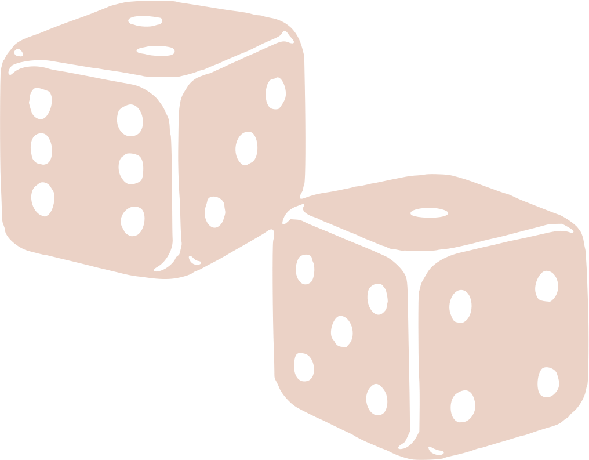

10 askelta yhteiskunnallisesti aktiivisten opiskelijoiden kasvattamiseen
Suositukset korkeakouluilleMiksi tunnustaa aktiivinen kansalaistoiminta osaksi opintoja?
- Korkeakoulu on alusta, joka mahdollistaa aktiivisena opiskelijana ja kansalaisena toimimisen. Oikeanlaisella kannustuksella opiskelijat voivat vaikuttaa asuin-, elin- ja opiskeluympäristöönsä esimerkiksi järjestö-, opiskelijaedustaja- ja vapaaehtoistoiminnan kautta tai vaikkapa kunnanvaltuutettuna.
- Opiskelijoita on paljon, ja he muodostavat merkittävän osan korkeakoulun yhteiskunnallisesta vuorovaikutuksesta. Kasvattamalla aktiivisia opiskelijoita myös koulutuksen vaikuttavuus yhteiskunnassa kasvaa!
- Korkeakoulujen kannattaa palkita opiskelijoita aktiivisesta kansalaisuudesta tunnustamalla syntyvä osaaminen opintopisteiden muodossa, sillä tunnustus luo opiskelijoille kokemuksen siitä, että heidän tekemisellään yhteiskunnassa ja yliopistoyhteisössä on merkitystä.
- Kansalaistoiminta mahdollistaa kohtaamisia ja luo yhteisöllisyyttä. Yliopiston piirissä toimivat opiskelija-aktiivit integroituvat hyvin yliopistoyhteisöön, mikä tukee opiskelua ja hyvinvointia. Opiskelijan verkostoituminen yliopistoyhteisön ulkopuolella taas edesauttaa työllistymistä ja monipuolistaa maailmankuvaa.
Miten käytännössä?
- Luodaan sivuaineen kaltainen opintokokonaisuus yhteiskunnallisen aktiivisuuden ympärille. Opintokokonaisuus tutkintotodistuksessa on opiskelijalle valttikortti työnhaussa ja luo uudenlaista kuvaa korkeakoulutuksen aikana syntyvästä osaamisesta!
- Ei opintopisteitä mistä tahansa toiminnasta: Määritellään selkeät pelisäännöt sille, millaista toimintaa sisällytetään osaksi opintoja. Korkeakoulun arvot ja eettiset periaatteet tukevat rajanvetoa epäselvissä tapauksissa.
- Koko korkeakoulun kattava, poikkitieteellinen opintokokonaisuus edistää parhaiten uudenlaisen osaamisen syntymistä. Kannattaa olla ennakkoluuloton eri tieteenalojen ja yhteiskunnan sektorien suhteen - uudet ideat syntyvät näiden törmäyttämisen kautta!
- Oppimispäiväkirjan tai portfolion avulla opinnollistetaan yhteiskunnallista aktiivisuutta ja sidotaan käytännön kokemus omaan tieteenalaan.
Miten yliopisto voi tukea opiskelijoiden aktiivisuutta?
- Yliopistoyhteisön piirissä opiskelijoiden aktiivista osallistumista yliopiston toimintaan edistävät: päätöksentekoelinten edustuksellisuus, koulutukset, toiminnasta myönnettävät opintopisteet ja kokouspalkkiot, mahdollisuus korvata pakollista opetusta läsnäololla kokouksissa, opiskelijoiden osallistumisen merkityksen korostaminen viestinnässä ja kielimuurien purkaminen kv-opiskelijoiden osallistumisen mahdollistamiseksi.
- Opiskelijoiden aktiivisuutta ympäröivässä yhteiskunnassa tuetaan parhaiten kannustamalla siihen aktiivisesti jo opintojen aikana, tunnistamalla ja sanoittamalla siitä syntyvä arvokas osaaminen ja tunnustamalla se opintosuoritusten muodossa.
